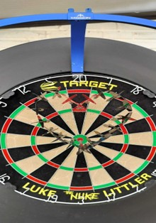
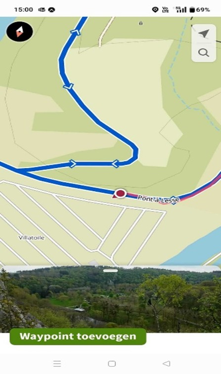
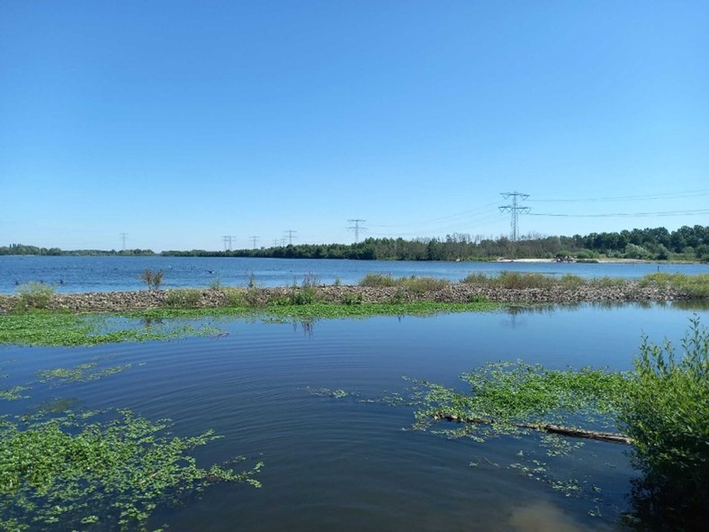
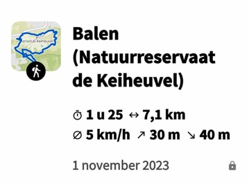
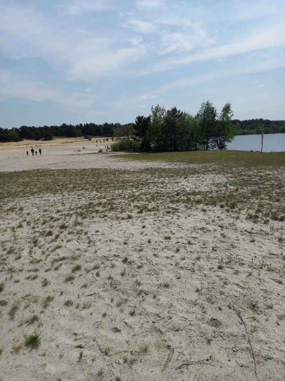

Darts & Wandelen
Als ik niet met technologie bezig ben, vind je me met een dartpijl in de hand of wandelend tussen bomen en heuvels. Darts scherpt mijn concentratie, de natuur brengt rust. Twee passies die perfect in balans zijn.




